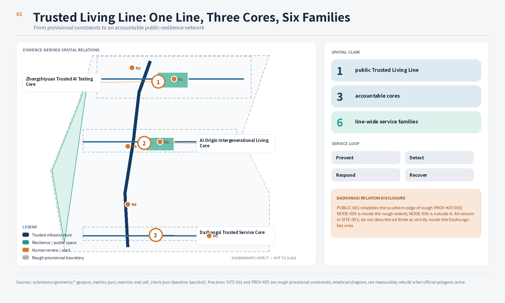
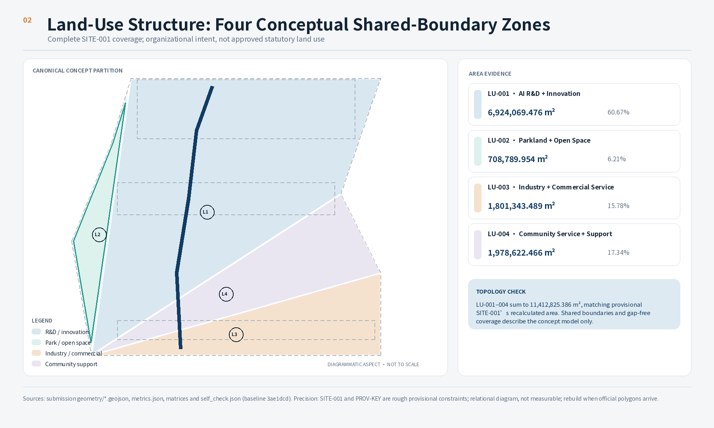
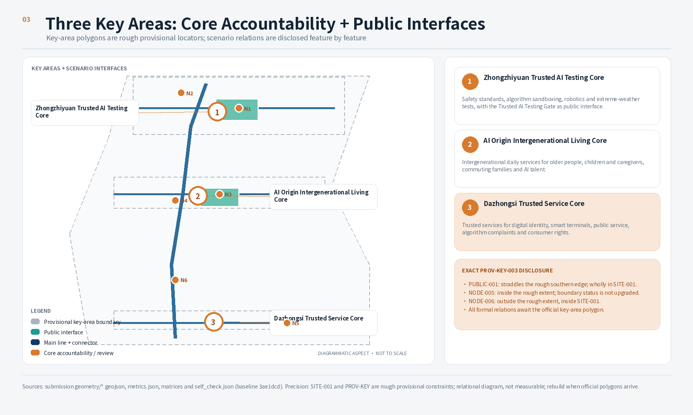
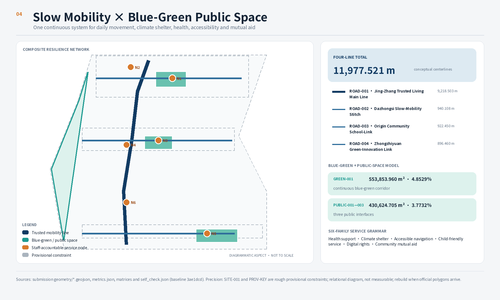
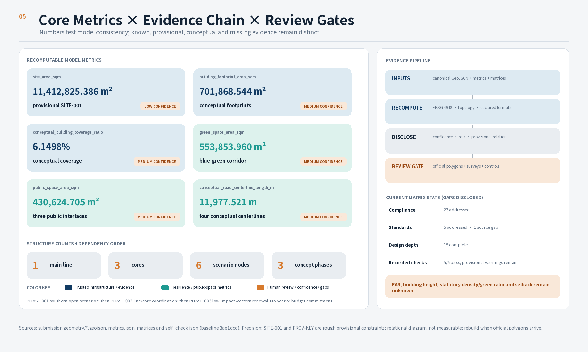

01
Zhongzhiyuan Trusted AI Testing Core
Controlled tests · Human stop · Public rules
One continuous public living line connects everyday resilience, three accountable cores, and six governable service-node families through a human-controlled fallback loop.
Controlled tests · Human stop · Public rules
Daily services shared by older people, children, families, and AI talent
Digital rights · Consumer rights · Human appeal
A walking network for shelter, health, accessibility, and mutual aid along the Jing-Zhang Railway Heritage Park. Its 11.978 km conceptual alignment is not a road redline or engineering scheme.
Controlled tests · Human stop · Public rules
Daily services shared by older people, children, families, and AI talent
Digital rights · Consumer rights · Human appeal
Floor Area Ratio, Building Height, statutory Building Coverage Ratio, statutory green ratio, and setbacks remain unknown and must not be inferred from concept geometry.
Low confidence · EPSG:4548
Not statutory building density
Not a statutory green ratio
Recalculated from public-space geometry
One line + three connectors
One line / three cores / six node families
The current Dazhongsi relationship is directional: NODE-005 is inside the rough key area, PUBLIC-001 straddles its southern edge, and NODE-006 lies outside that rectangle but inside SITE-001. Recheck or relocate the complete relationship when the official polygon arrives.
Place safety standards, algorithm sandboxes, robotics, and extreme-weather testing inside bounded, logged, human-accountable carriers.
Trusted AI Test Gate · PROV-KEY-001Use short paths and shared times to connect care, children, families, talent support, and community learning.
Intergenerational Living Room · PROV-KEY-002Explain digital identity, smart terminals, complaint correction, and consumer rights at a transit-accessible public interface.
Algorithm Transparency Plaza · PROV-KEY-003Source registration and access dates are controlled by sources.json. Institutional cases support mechanism comparison only; no media, marks, or promotional performance claims are copied.





Every scenario runs Prevent - Detect - Respond - Recover with purpose limitation, data minimization, authorization, withdrawal, logging, Human Review, and appeal.
Seating, legibility, help, and no smartphone dependency
Continuous sightlines, low-conflict crossings, data protection
Safe continuity among transit, school, care, and home
Transparent test rules plus ordinary life support
Bilingual offline information and human translation fallback
Clear authority, handoff, stop, and appeal duties
Open after human confirmation; fixed guidance on digital failure
Residents and visitors · Line, green corridor, shelter pointsDo not auto-route through uncertainty; provide accompaniment
Wheelchair and mobility-aid users · Line, connectors, staffed desksMove to a staffed safe point when conflict persists
Children and caregivers · School links, crossings, living roomNo diagnosis; human first aid and referral take over
Older and chronically ill people · Health nodes and rest pointsVoluntary registration; staff verify each request
Families and people living alone · Mutual-aid nodes and desksBooking, isolation, logs, and a human stop
Test participants · Controlled Test Gate zonesProve only necessary attributes; keep physical credentials
Service users · Trusted Service CorePause disputed outcomes; Human Review and appeal
Affected people · Transparency Plaza and human deskStop test; preserve cash and ordinary terminals
Consumers and merchants · Booked testing nodeFixed safe route, patrol, and accompaniment
Late-returning families and visitors · Lighting and staffed interfacesLow-confidence translation goes to people and symbols
International visitors · Core desks and offline pointsStop on real risk and switch to emergency procedure
All users and operators · Line, cores, node familiesThe current Dazhongsi relationship is directional: NODE-005 is inside the rough key area, PUBLIC-001 straddles its southern edge, and NODE-006 lies outside that rectangle but inside SITE-001. Recheck or relocate the complete relationship when the official polygon arrives.
Make the sequence question, test, human judgment, and repair visible; this is not a certification centre.
Share daily services while keeping personal stories, health information, and child data private.
Put service explanation, minimal disclosure, complaints, and consumer rights at a public interface.
Every scenario runs Prevent - Detect - Respond - Recover with purpose limitation, data minimization, authorization, withdrawal, logging, Human Review, and appeal.
Maintain six node families and non-digital routes
Controlled industry validation and fallback sampling
Aggregate use, complaints, opt-outs, repair, and access
Public retrospective, professional exchange, and resilience drill
Study southern open scenarios, walking safety, and the Dazhongsi public edge first
Coordinate the living line, three cores, services, and reversible facilities
Study western low-disturbance renewal, service gaps, and long-term governance
Current matrix: 17 addressed
Current matrix: 6 addressed
15 complete; data gaps disclosed separately
5 addressed; 1 source gap
Source registration and access dates are controlled by sources.json. Institutional cases support mechanism comparison only; no media, marks, or promotional performance claims are copied.
A-BOUNDARY-001SITE-001 and all three key areas are provisional coordinates, not official boundaries.A-CONTROLS-001Planning controls, redlines, ownership, utilities, fire, heritage, and engineering inputs are missing.A-MOBILITY-001The line and connectors are concept walking alignments and assert no existing right-of-way.A-PRIVACY-001No default face recognition, individual tracking, or identifiable movement history.A-RECALC-001On receipt of official polygons, recalculate in EPSG:4548 and recheck topology.OFFICIAL-ANNOUNCEMENTPrequalification Announcement for the Centennial Jing-Zhang AI Innovation Belt International Urban Design Open CallAGENT-TASKBOOKCleared Agent taskbook for task alignment, not official spatial conclusionsMOHURD-URBAN-DESIGN-MEASURESMOHURD Measures for Urban Design ManagementMOHURD-CONTROL-DETAILED-PLANNINGMOHURD Measures for Regulatory Detailed PlanningMNR-LAND-USE-CLASSIFICATION-GUIDEMNR land-use classification guide for territorial-space workCASE-STUDIESOfficial material from Vector, Mila, AI Singapore, Cyber Valley, ETH AI Center, and Hub71+ AIBOUNDARY_TRUSTDisclosed provisional geometry may support content scoring; it must not support an official redline, precise-area or statutory controls, ownership, approval, or engineering conclusionsKEY_AREAS_TRUSTAll three key areas are disclosed provisional geometry and remain eligible for content scoring; they must not support official key-area polygons, precise-area or statutory controls, ownership, approval, or engineering conclusionsLAND_USE_TOPOLOGYFour shared-edge partitions cover SITE-001VISUAL_STATICStatic HTML has no external dependenciesPROFESSIONAL_EVIDENCENarrative links standards, depth, geometry, metrics, sources, and assumptions